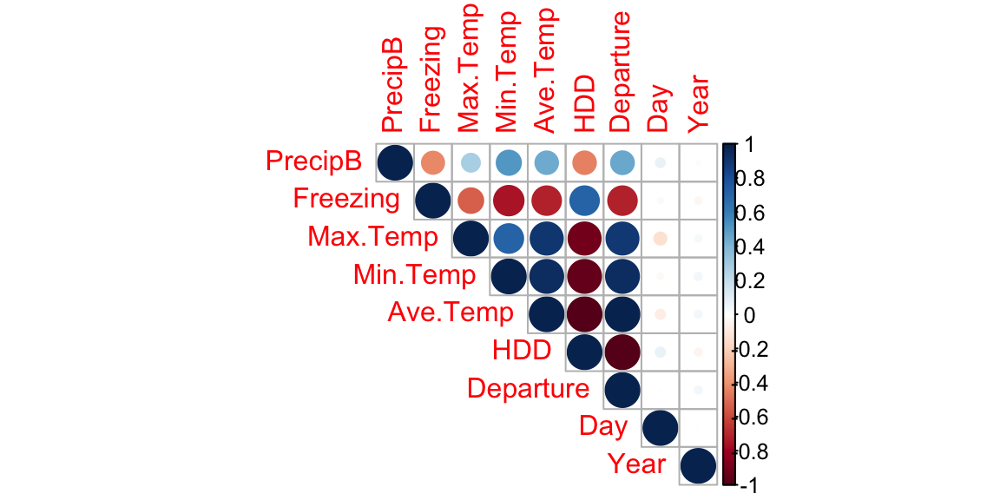

Project B
Will there be precipitation in Seattle?
A simple machine learning project using logistic regression, k-Nearest neighbors, and Naive Bayes to predict precipitation

Data importing and cleaning
The complete R code for this project lives on my GitHub repo.
For this project, I used weather data collected by National Weather Service for every December day in Seattle from 1990 to 2021. These data included date, max/min/average temperature, average temperature departure from “normal” (departure), heating degree day (HDD), cooling degree days (CDD), inches precipitation, presence/absence of new snow (new snow), and inches snow depth.
str(PBdf1)## 'data.frame': 989 obs. of 10 variables:
## $ Date : chr "12/1/21" "12/2/21" "12/3/21" "12/4/21" ...
## $ Max.Temp : chr "58" "51" "46" "43" ...
## $ Min.Temp : chr "50" "39" "32" "37" ...
## $ Ave.Temp : chr "54" "45" "39" "40" ...
## $ Departure : chr "13.8" "5" "-0.9" "0.3" ...
## $ HDD : chr "11" "20" "26" "25" ...
## $ CDD : chr "0" "0" "0" "0" ...
## $ Precipitation: chr "0" "0.04" "0" "0.64" ...
## $ New.Snow : chr "0" "0" "0" "0" ...
## $ Snow.Depth : chr "0" "0" "0" "0" ...After uploading the data, I immediately ran into some problems. For one, most variables had leading and/or trailing white spaces that I couldn’t remove using a simple gsub() function. Closer examination showed that this was because most of the variables were in utf8 format, so I created a simple function to fix these erroneously formatted values.
utf8::utf8_print(unique(PBdf1$Ave.Temp), utf8 = FALSE)## [1] "54" "45" "39" "40" "38"
## [6] "41" "47" "41.5" "38.5" "39.5"
## [11] "42.5" "36" "37" "35.5" "40.5"
## [16] "43" "35" "29.5" "22.5" "28.5"
## [21] "25.5" "34" "22" "37.0\u00a0" "38.5\u00a0"
## [26] "35.5\u00a0" "39.5\u00a0" "40.5\u00a0" "44.5\u00a0" "48.0\u00a0"
## [31] "50.0\u00a0" "42.5\u00a0" "36.5\u00a0" "40.0\u00a0" "44.0\u00a0"
## [36] "45.0\u00a0" "46.5\u00a0" "47.0\u00a0" "46.0\u00a0" "45.5\u00a0"
## [41] "49.5\u00a0" "33.0\u00a0" "32.5\u00a0" "37.5\u00a0" "36.0\u00a0"
## [46] "47.5\u00a0" "43.5\u00a0" "42.0\u00a0" "41.5\u00a0" "38.0\u00a0"
## [51] "39.0\u00a0" "51.5\u00a0" "35.0\u00a0" "33.5\u00a0" "30.5\u00a0"
## [56] "27.0\u00a0" "41.0\u00a0" "34.0\u00a0" "32.0\u00a0" "34.5\u00a0"
## [61] "31.0\u00a0" "31.5\u00a0" "29.0\u00a0" "30.0\u00a0" "49.0\u00a0"
## [66] "43.0\u00a0" "26.5\u00a0" "24.5\u00a0" "50.5\u00a0" "55.0\u00a0"
## [71] "27.5\u00a0" "48.5\u00a0" "53.0\u00a0" "55.5\u00a0" "51.0\u00a0"
## [76] "29.5\u00a0" "28.5\u00a0" "22.5\u00a0" "21.5\u00a0" "20.5\u00a0"
## [81] "23.0\u00a0" "28.0\u00a0" "54.0\u00a0" "25.0\u00a0" "21.0\u00a0"
## [86] "18.5\u00a0" "19.0\u00a0" "19.5\u00a0" "25.5\u00a0" "26.0\u00a0"
## [91] "22.0\u00a0" "17.0\u00a0" "53.5\u00a0" "56.0\u00a0" "52.5\u00a0"
## [96] "17.5\u00a0" "16.0\u00a0" "12.0\u00a0" "14.5\u00a0" "M\u00a0"
## [101] "20.0\u00a0" "12.5\u00a0" "11.0\u00a0" "16.5\u00a0" "14.0\u00a0"#Create a function to replace all utf8 values
replace.values <- function(x) x <- iconv(x, "latin1", "ASCII", sub="")Code below shows data cleaning done to create the cleaned initial dataframe.
PBdf2 <- PBdf1 %>%
#Remove "T" and "M" values for precipitation, as there is no public documentation to indicate what these values mean (and there are only a few instances in the dataset)
filter(!grepl("T",Precipitation, fixed = T),
!grepl("M",Precipitation, fixed = T)) %>%
#Replace all utf8 values
mutate_all(replace.values) %>%
#Fix dates, which were coded differently for 2021 versus all previous years
mutate(Date = case_when(grepl("/",Date,fixed = T) ~
as.Date(Date, format= "%m/%d/%y"),
grepl("-",Date,fixed = T) ~
as.Date(Date, format= "%Y-%m-%d"))) %>%
#Separate out Date into month, day, and year
mutate(Year = lubridate::year(Date),
Month = lubridate::month(Date),
Day = lubridate::day(Date)) %>%
#Make sure relevant variables are in numeric format
mutate(across(c(Max.Temp:Precipitation,Day,Month,Departure,Year), as.numeric)) %>%
#Create binary presence/absence variables for precipitation
mutate(Freezing = case_when(Min.Temp > 33 ~ 0,
Min.Temp <= 33 ~ 1),
PrecipB = case_when(Precipitation > 0 ~ 1,
Precipitation ==0 ~ 0)) %>%
#Select out CDD, which only has a value of zero (makes sense, given likelihood of having to cool your house during December in Seattle)
select(PrecipB,Freezing,ends_with("Temp"),HDD,Departure, Day,Year)The structure of the
str(PBdf2)## 'data.frame': 923 obs. of 9 variables:
## $ PrecipB : num 0 1 0 1 1 1 1 1 1 1 ...
## $ Freezing : num 0 0 1 0 1 0 0 0 0 0 ...
## $ Max.Temp : num 58 51 46 43 43 46 50 48 43 44 ...
## $ Min.Temp : num 50 39 32 37 33 36 44 35 34 35 ...
## $ Ave.Temp : num 54 45 39 40 38 41 47 41.5 38.5 39.5 ...
## $ HDD : num 11 20 26 25 27 24 18 23 26 25 ...
## $ Departure: num 13.8 5 -0.9 0.3 -1.6 1.6 7.7 2.3 -0.6 0.5 ...
## $ Day : num 1 2 3 4 5 6 7 8 9 10 ...
## $ Year : num 2021 2021 2021 2021 2021 ...Splitting data into train & test subsets
Partition data into training and test datasets using a 75% to 25% split ratio.
set.seed(1234)
sample_set <- sample(nrow(PBdf2),round(nrow(PBdf2)*0.75), replace = F)
training <- PBdf2[sample_set,]
testing <- PBdf2[-sample_set,]Adressing class imbalance using Synthetic Minority Oversampling Technique (SMOTE)
The code below shows that there is a class imbalance between precipitation and no precipitation.
round(prop.table(table(select(PBdf2, PrecipB),exclude = NULL)),4)*100##
## 0 1
## 29.58 70.42round(prop.table(table(select(training, PrecipB),exclude = NULL)),4)*100##
## 0 1
## 30.2 69.8round(prop.table(table(select(testing, PrecipB),exclude = NULL)),4)*100##
## 0 1
## 27.71 72.29I deal with this imbalance using SMOTE
smote <- SMOTE(training, training$PrecipB)
training.adj <- smote$data %>% select(-class)
round(prop.table(table(select(training.adj, PrecipB),exclude = NULL)),4)*100##
## 0 1
## 46.39 53.61Multicollinearity
Visualizing Multicollinearity 
Logistic regression
Clearly, the different temperature variables are colinear with each other (glm automatically generates NAs for coefficients)
train.mod <- glm(data = training.adj, family = binomial,
formula = PrecipB ~ .)
summary(train.mod)##
## Call:
## glm(formula = PrecipB ~ ., family = binomial, data = training.adj)
##
## Deviance Residuals:
## Min 1Q Median 3Q Max
## -2.4826 -0.7853 0.3312 0.7742 2.9383
##
## Coefficients: (1 not defined because of singularities)
## Estimate Std. Error z value Pr(>|z|)
## (Intercept) 14.596275 31.348758 0.466 0.641
## Freezing -0.194167 0.274538 -0.707 0.479
## Max.Temp -0.069211 0.230410 -0.300 0.764
## Min.Temp 0.209760 0.228236 0.919 0.358
## Ave.Temp NA NA NA NA
## HDD 0.150775 0.345021 0.437 0.662
## Departure 0.180072 0.294900 0.611 0.541
## Day 0.018287 0.018275 1.001 0.317
## Year -0.010983 0.009411 -1.167 0.243
##
## (Dispersion parameter for binomial family taken to be 1)
##
## Null deviance: 1244.36 on 900 degrees of freedom
## Residual deviance: 896.47 on 893 degrees of freedom
## AIC: 912.47
##
## Number of Fisher Scoring iterations: 5exp(coef(train.mod))## (Intercept) Freezing Max.Temp Min.Temp Ave.Temp HDD
## 2.183141e+06 8.235200e-01 9.331295e-01 1.233382e+00 NA 1.162735e+00
## Departure Day Year
## 1.197304e+00 1.018455e+00 9.890768e-01training.adj2 <- training.adj %>% select(-Ave.Temp)
train.mod2 <- glm(data = training.adj2, family = binomial,
formula = PrecipB ~ .)
preds.1 <- predict(train.mod2, testing, type = 'response')
#Clearly indicates Max.Temp, Min.Temp,and HDD are colinear
vif(train.mod2)## Freezing Max.Temp Min.Temp HDD Departure Day Year
## 2.447423 191.251962 230.190839 377.199096 270.172975 3.853988 1.010109training.adj3 <- training.adj2 %>% select(-Max.Temp,-Min.Temp)
train.mod3 <- glm(data = training.adj3, family = binomial,
formula = PrecipB ~ Day + Year + HDD)
summary(train.mod3)##
## Call:
## glm(formula = PrecipB ~ Day + Year + HDD, family = binomial,
## data = training.adj3)
##
## Deviance Residuals:
## Min 1Q Median 3Q Max
## -2.4278 -0.9292 0.3694 0.8989 2.9837
##
## Coefficients:
## Estimate Std. Error z value Pr(>|z|)
## (Intercept) 29.187486 17.712180 1.648 0.0994 .
## Day 0.039719 0.008964 4.431 9.38e-06 ***
## Year -0.011827 0.008815 -1.342 0.1797
## HDD -0.221031 0.017507 -12.625 < 2e-16 ***
## ---
## Signif. codes: 0 '***' 0.001 '**' 0.01 '*' 0.05 '.' 0.1 ' ' 1
##
## (Dispersion parameter for binomial family taken to be 1)
##
## Null deviance: 1244.36 on 900 degrees of freedom
## Residual deviance: 978.44 on 897 degrees of freedom
## AIC: 986.44
##
## Number of Fisher Scoring iterations: 5vif(train.mod3)## Day Year HDD
## 1.037443 1.004359 1.041557preds.2 <- predict(train.mod3, testing, type = 'response')
ideal.cutoff <- optimalCutoff(
actuals = testing$PrecipB,
predictedScores = preds.2,
optimiseFor = "Both"
)
preds.3 <- ifelse(preds.2 >= ideal.cutoff,1,0)
preds.table <- table(testing$PrecipB, preds.3)
sum(diag(preds.table))/nrow(testing)## [1] 0.7619048Naive Bayes
bayes.mod1 <- naiveBayes(PrecipB ~ Day + Year + HDD,
data = training.adj3, laplace = 1)
bayes.mod1##
## Naive Bayes Classifier for Discrete Predictors
##
## Call:
## naiveBayes.default(x = X, y = Y, laplace = laplace)
##
## A-priori probabilities:
## Y
## 0 1
## 0.463929 0.536071
##
## Conditional probabilities:
## Day
## Y [,1] [,2]
## 0 14.60024 8.935627
## 1 16.49896 8.650276
##
## Year
## Y [,1] [,2]
## 0 2005.524 8.149689
## 1 2005.236 9.515558
##
## HDD
## Y [,1] [,2]
## 0 30.18724 5.904600
## 1 23.93789 5.625988bayes.pred1 <- predict(bayes.mod1, testing, type = "class")
bayes.pred1.table <- table(testing$PrecipB, bayes.pred1)
bayes.pred1.table## bayes.pred1
## 0 1
## 0 43 21
## 1 29 138sum(diag(bayes.pred1.table))/nrow(testing)## [1] 0.7835498k-Nearest Neighbors
testing.knn <- testing %>% select(-Max.Temp,-Min.Temp,-Ave.Temp)
train_labels <- as.factor(pull(training.adj3, PrecipB))
test_labels <- as.factor(pull(testing.knn, PrecipB))
k.spec <- sqrt(nrow(testing.knn))
knn.preds1 <- knn(train = training.adj3,
test = testing.knn,
cl = train_labels,
k=k.spec
)
head(knn.preds1)## [1] 0 1 1 1 1 1
## Levels: 0 1knn.predtbl <- table(test_labels, knn.preds1)
knn.predtbl## knn.preds1
## test_labels 0 1
## 0 52 12
## 1 45 122sum(diag(knn.predtbl))/nrow(testing.knn)## [1] 0.7532468